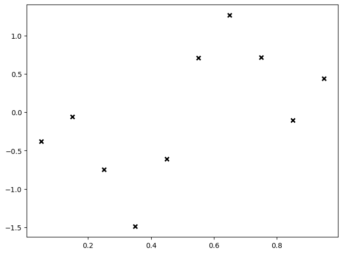
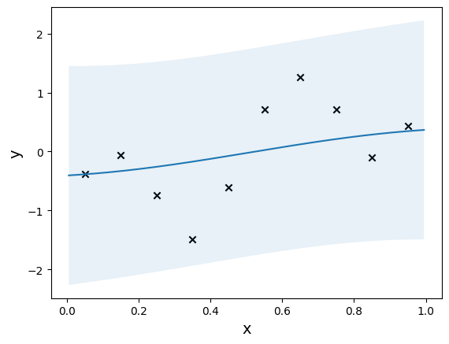

Gaussian Process Regression with GPyTorch
目录
这个例子主要是利用GPytorch，来实现高斯过程回归。
计算Mean
- zero mean function
gpytorch.means.ZeroMean() - constant mean function
gpytorch.means.ConstantMean() - linear mean function
gpytorch.means.LinearMean()
计算Covariance
- RBFKernel
gpytorch.kernels.RBFKernel() - adding a scaling coefficient:
kernels.ScaleKernel(gpytorch.kernels.RBFKernel())
一般会在核函数的输出上添加缩放系数。
在核函数的输出上添加缩放系数是为了调整核函数的影响力。
例如，如果我们希望某个核函数的输出对预测结果的贡献更大，我们可以使用较大的缩放系数。相反，如果我们希望某个核函数的输出对预测结果的贡献较小，我们可以使用较小的缩放系数。
通过在核函数的输出上应用kernels.ScaleKernel()，我们可以乘以一个固定的缩放因子，以增加或减小核函数的输出。
exact GP and approximate GP
- Exact inference applies when the closed-form expression of the posterior is available.
We can simple and quick to compute the posterior distribution using
gpytorch.models.ExactGP. - Approximate inference applies when the posterior distribution involves high-dimensional integrals.
It is difficult and time-consuming to compute. In such cases we use
gpytorch.models.ApproximateGP.
exact GP
$$ f(x) = -\cos(\pi x) + \sin(4 \pi x)$$
import torch
import numpy as np
from matplotlib import pyplot as plt
def f(x, noise=0):
"""
objective function
"""
return -torch.cos(np.pi * x) + torch.sin(4 * np.pi * x) + noise * torch.randn(*x.shape)
# observation noise
noise = 0.1
# number of observations
N =10
# initial observations upon initiation 生成一个等间距的函数调用
X_init = torch.linspace(0.05,0.95,N)
y_init = f(X_init, noise)
print(X_init)
print(y_init)
# plot noisy observations
plt.figure(figsize=(8,6))
plt.plot(X_init.numpy(), y_init.numpy(), 'kx', mew=2)
tensor([0.0500, 0.1500, 0.2500, 0.3500, 0.4500, 0.5500, 0.6500, 0.7500, 0.8500,
0.9500])
tensor([-0.4102, 0.0099, -0.7328, -1.4028, -0.7601, 0.6764, 1.5090, 0.8017,
-0.1260, 0.3746])

GPRegressor
概率分布和边缘分布的区别：
- 概率分布
$p(f | x)$ ：这是指给定输入变量 $x$ 的情况下，目标变量 $f$ 的概率分布。在监督学习中，我们通常使用概率模型来建模输入与输出之间的关系。$p(f | x)$描述了模型对于给定输入$x$的输出 $f$的不确定性。常见的例子是高斯过程模型，其中 $p(f | x)$是一个高斯分布。
- 边缘分布
$p(y | x)$ ：这是指给定输入变量 $x$的情况下，目标变量 $y$的概率分布。边缘分布是通过对概率分布 $p(f | x)$ 进行积分或求和得到的，其中 $y$ 是通过对 $f$进行某种函数变换得到的。在监督学习中，$y$ 通常是观测到的目标变量，而 $f$ 是模型对于给定输入 $x$的预测值。
import gpytorch
class GPRegressor(gpytorch.models.ExactGP):
def __init__(self, train_inputs, train_targets, mean, kernel, likelihood=None):
if likelihood is None:
likelihood = gpytorch.likelihoods.GaussianLikelihood()
# initiate the superclass ExactGP to refresh the posterior
super().__init__(train_inputs, train_targets, likelihood)
# store attributes
self.mean = mean
self.kernel = kernel
self.likelihood = likelihood
def forward(self, x):
"""
Return:
a posterior multivariate normal distribution
"""
# mean and kernel are stored as attributes
mean_x = self.mean(x)
covar_x = self.kernel(x)
return gpytorch.distributions.MultivariateNormal(mean_x, covar_x)
def predict(self, x):
"""
compute the marginal predictive distribution of y given x
"""
# set the model to evaluation mode
self.eval()
# perform inference without gradient propagation
with torch.no_grad(): # 在预测阶段，不需要计算梯度，因为只有前向传播
# get posterior distribution p(f|x)
pred = self(x)
# convert posterior distribution p(f|x) to p(y|x)
return self.likelihood(pred)
def plot_model(model, xlim = None):
"""
"""
X_train = model.train_inputs[0].cpu().numpy()
y_train = model.train_targets.cpu().numpy()
print(X_train)
print(y_train)
# obtain range of x axis
if xlim is None:
xmin = float(X_train.min())
xmax = float(X_train.max())
x_range = xmax - xmin
xlim = [xmin - 0.05 * x_range, xmax + 0.05 * x_range]
model_tensor_example = list(model.parameters())[0]
print(model_tensor_example)
# The .to() method is used to specify the target device.
# .to(model_tensor_example)将张量转换为与 model_tensor_example 张量相同的设备上
X_plot = torch.linspace(xlim[0],xlim[1], 200).to(model_tensor_example)
# generate predictive posterior distribution
model.eval()
predictive_distribution = model.predict(X_plot)
# obtain mean, upper and lower bounds
lower, upper = predictive_distribution.confidence_region()
prediction = predictive_distribution.mean.cpu().numpy()
X_plot = X_plot.numpy()
plt.scatter(X_train, y_train, marker='x', c='k')
plt.plot(X_plot, prediction)
plt.fill_between(X_plot, lower, upper, alpha=0.1)
plt.xlabel('x', fontsize=14)
plt.ylabel('y', fontsize=14)
mean_fn = gpytorch.means.ConstantMean()
kernel_fn = gpytorch.kernels.ScaleKernel(gpytorch.kernels.RBFKernel())
model = GPRegressor(X_init, y_init, mean_fn, kernel_fn)
plot_model(model)
[[0.05 ]
[0.14999999]
[0.24999999]
[0.35 ]
[0.45 ]
[0.55 ]
[0.65 ]
[0.75 ]
[0.85 ]
[0.95 ]]
[-0.410193 0.0098884 -0.732843 -1.4027661 -0.7600916 0.6763583
1.5090019 0.801654 -0.1260201 0.3746474]
Parameter containing:
tensor([0.], requires_grad=True)
